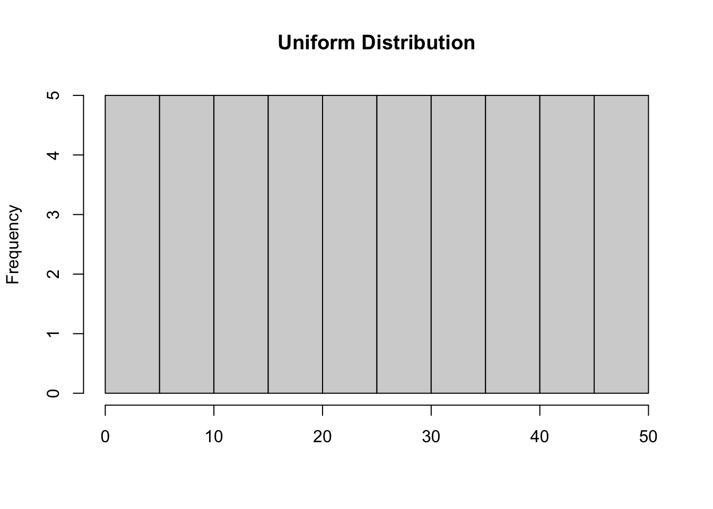
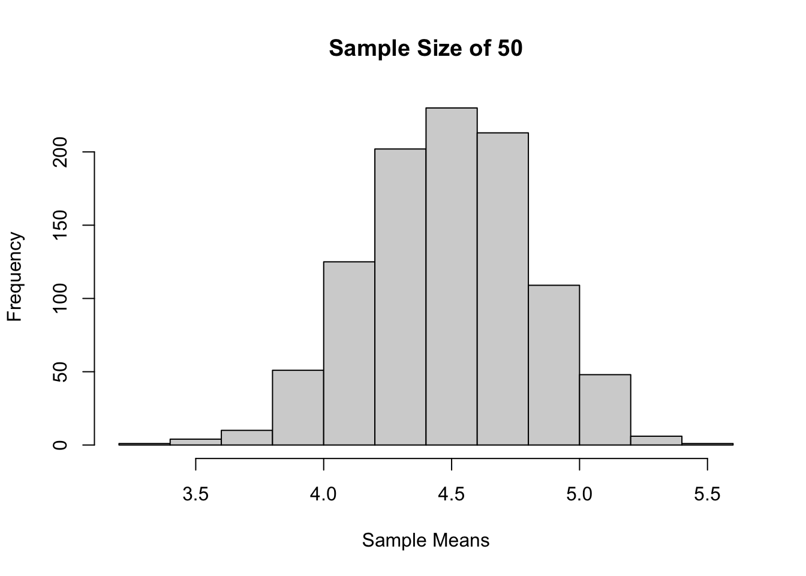
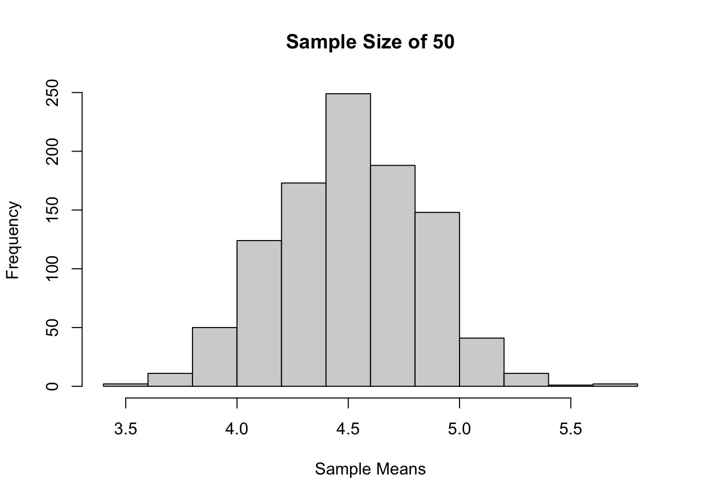

unif1 <- c(1:8)
unif1[1] 1 2 3 4 5 6 7 8Sampling Distributions in R
Kembali ke Pengantar Sains Data
Misalkan kita punya suatu distribusi uniform
Akan dilakukan sampling dari distribusi tersebut
unif1 <- c(1:8)
unif1[1] 1 2 3 4 5 6 7 8Lihat sebarannya
mean(unif1)[1] 4.5sd(unif1)[1] 2.44949hist(unif1, main = "Uniform Distribution", xlab = " ")
Misal diambil berbagai ukuran sampel dengan pengembalian
set.seed(211)Sample size 3, 1000 kali percobaan
sample_means <- c( )
for(i in 1:1000){
sample_means[i] <- mean(sample(8, 3, replace = T))
}
hist(sample_means, xlim = c(0,8), main = "Sample Size of 3", xlab = "Sample Means")
Sample size 10, 1000 kali percobaan
sample_means <- c( )
for(i in 1:1000){
sample_means[i] <- mean(sample(8, 10, replace = T))
}
hist(sample_means, xlim = c(0,8), main = "Sample Size of 10", xlab = "Sample Means")
Sample size 50, 1000 kali percobaan
sample_means <- c( )
for(i in 1:1000){
sample_means[i] <- mean(sample(8, 50, replace = TRUE))
}
hist(sample_means, xlim = c(0,8), main = "Sample Size of 50", xlab = "Sample Means")
Jika dilihat berdasarkan histogram dari ketiga sampling tadi, bisa terlihat bahwa semakin besar ukuran sampelnya maka distribusinya akan semakin mendekati distribusi normal
Dalil 1 Apabila sampel acak berukuran n diambil dengan pengembalian dari populasi berhingga yang berukuran \(N\), dimana populasi tersebut mempunyai mean \(\mu\) dan variansi \(\sigma^2\) , maka untuk 𝑛 yang besar, distribusi dari mean sampel \(\bar{X}\) akan mendekati distribusi normal dengan mean \(\mu_\bar{X} = \mu\) dan \(\sigma\bar{X}^2 = \frac{\sigma^2}{n}\). Dengan demikian \[Z = \frac{\bar{X} - \mu}{\frac{\sigma}{\sqrt{n}}} \; \text{mendekati} \; N(0,1)\]
Contoh Misalkan diberikan populasi 1,1,1,3,4,5,6,6,6,7 dan misalkan diambil sampel acak berukuran 36 dari populasi tersebut dengan pengembalian. Tentukan probabilitas bahwa nilai rata-rata sampelnya antara 3.85 dan 4.45 !
library(distr)Loading required package: startupmsgUtilities for Start-Up Messages (version 0.9.7)For more information see ?"startupmsg", NEWS("startupmsg")Loading required package: sfsmiscObject Oriented Implementation of Distributions (version 2.9.2)Attention: Arithmetics on distribution objects are understood as operations on corresponding random variables (r.v.s); see distrARITH().
Some functions from package 'stats' are intentionally masked ---see distrMASK().
Note that global options are controlled by distroptions() ---c.f. ?"distroptions".For more information see ?"distr", NEWS("distr"), as well as
http://distr.r-forge.r-project.org/
Package "distrDoc" provides a vignette to this package as well as to several extension packages; try vignette("distr").
Attaching package: 'distr'The following objects are masked from 'package:stats':
df, qqplot, sddata1 <- c(1, 1, 1, 3, 4, 5, 6, 6, 6, 7,8,8)Kita hitung statistiknya
mean1 <- mean(data1)
sd1 <- sd(data1)Sekarang kita hitung probabilitasnya
n <- 36
probability <- pnorm(4.45, mean = mean1, sd = sd1/sqrt(n)) - pnorm(3.85, mean = mean1, sd = sd1/sqrt(n))
probability[1] 0.2794876Atau bisa kita ubah ke normal standar terlebih dahulu
n <- 36
standard_error <- sd1 / sqrt(n)
lower_bound <- 3.85
upper_bound <- 4.45
z_lower <- (lower_bound - mean1) / standard_error
z_upper <- (upper_bound - mean1) / standard_error
probability <- pnorm(z_upper) - pnorm(z_lower)
probability[1] 0.2794876Lalu bagaimana dengan tanpa pengambilan? Misalkan kita punya suatu distribusi uniform
unif2 <- c(1:50)
unif2 [1] 1 2 3 4 5 6 7 8 9 10 11 12 13 14 15 16 17 18 19 20 21 22 23 24 25
[26] 26 27 28 29 30 31 32 33 34 35 36 37 38 39 40 41 42 43 44 45 46 47 48 49 50Lihat sebarannya
mean(unif2)[1] 25.5sd(unif2)[1] 14.57738hist(unif2, main = "Uniform Distribution", xlab = " ")
Sample size 30, 1000 kali percobaan
sample_means <- c( )
for(i in 1:1000){
sample_means[i] <- mean(sample(50, 30, replace = FALSE))
}
hist(sample_means, main = "Sample Size of 50", xlab = "Sample Means")
Dapat terlihat juga bahwa bentuk distribusinya mirip dengan distribusi normal! Akan tetapi, formula yang digunakannya berbeda, ingat dalil 2!
Dalil 2 Apabila sampel acak berukuran n diambil secara acak tanpa pengembalian dari suatu populasi berhingga berukuran \(N\), dimana populasi tersebut memiliki mean \(\mu\) dan variansi \(\sigma^2\), maka distribusi probabilitas \(\bar{X}\) akan menghampiri normal dengan \(\mu_\bar{X} = \mu\) dan \(\sigma^2 = \frac{\sigma^2(N-n)}{n(N-1)}\)
contoh
Secara umum, jika sampel yang diambil sangat besar maka bisa digunakan CLT atau Central Limit Theorem
Semakin besar sampel yang diambil, bisa didekatkan ke distribusi normal dengan \(\mu_\bar{X} = \mu\) dan \(\sigma_\bar{X}^2 = \frac{\sigma^2}{n}\)
contoh Sebuah perusahaan memproduksi bohlam. Bila umur bohlam itu menyebar normal dengan mean 800 jam dan standar deviasi 40 jam, hitunglah peluang bahwa suatu sampel acak 16 bohlam akan mempunyai umur rata-rata kurang dari 775 jam.
n <- 16
mean2 <- 800
sd2 <- 40 / sqrt(n)
pnorm(775, mean=mean2, sd = sd2)[1] 0.006209665Atau jika ingin dirubah kedalam normal standar terlebih dahulu
x = (775-mean2) / sd2
pnorm(x)[1] 0.006209665transformasi data random menjadi normal standar (berlaku untuk distribusi kontinu apapun -> sampling dist.) gunakan CLT -> scale
set.seed(101)
n <- 100
random <- rnorm(n, mean = 10, sd = 8)
par(mfrow = c(1,2))
plot(density(random), main = "Sebelum")
plot(density(scale(random)), main = "Sesudah")
Misalkan diberikan populasi 1,1,1,3,4,5,6,6,6,7 dan misalkan diambil sampel acak berukuran 36 dari populasi tersebut dengan pengembalian. Tentukan probabilitas bahwa nilai rata-rata sampelnya antara 3.85 dan 4.45 !
library(distr)
data1 <- c(1, 1, 1, 3, 4, 5, 6, 6, 6, 7)
mean1 <- mean(data1)
sd1 <- sd(data1)
n <- 36
standard_error <- sd1 / sqrt(n)
lower_bound <- 3.85
upper_bound <- 4.45
z_lower <- (lower_bound - mean1) / standard_error
z_upper <- (upper_bound - mean1) / standard_error
probability <- pnorm(z_upper) - pnorm(z_lower)
probability[1] 0.5227107dt(x = 0.5, df = 14)[1] 0.3431707cdf
pt(0.025, df = 14) [1] 0.5097961Pr(T<t)=0.05 (alpha) -> nyari t nya (t-table)
qt(.95, df = 20)[1] 1.724718generating random data
set.seed(121)
n <- 100
randomt <- rt(n, df = 20)
hist(randomt, breaks=50, xlim = c(-6, 4))
contoh Tentukan nilai 𝑘 sedemikian sehingga Pr 𝑘 < 𝑇 < −1.761 = 0.045, dari suatu sampel acak berukuran 15 diambil dari suatu populasi normal
prob <- 0.045
atas <- pt(-1.716, df = 15)
bawah <- atas - prob
k <- qt(bawah, df = 15)
k[1] -2.691651